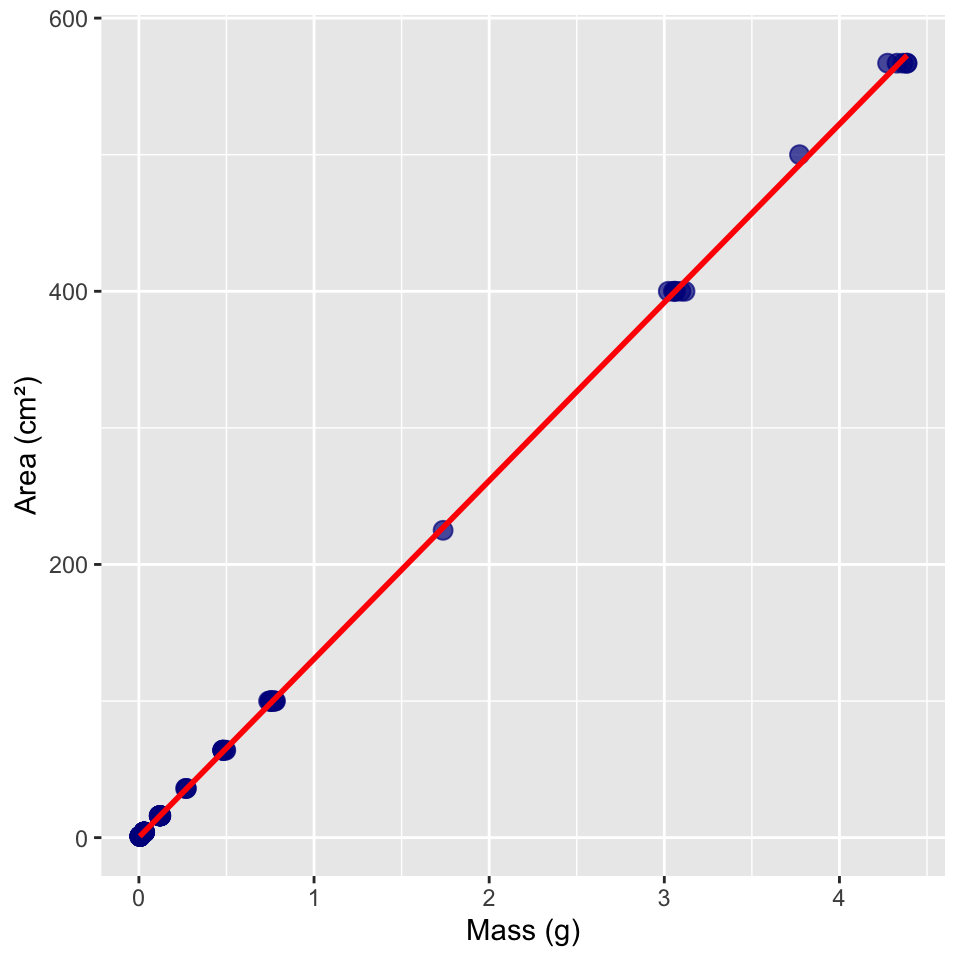
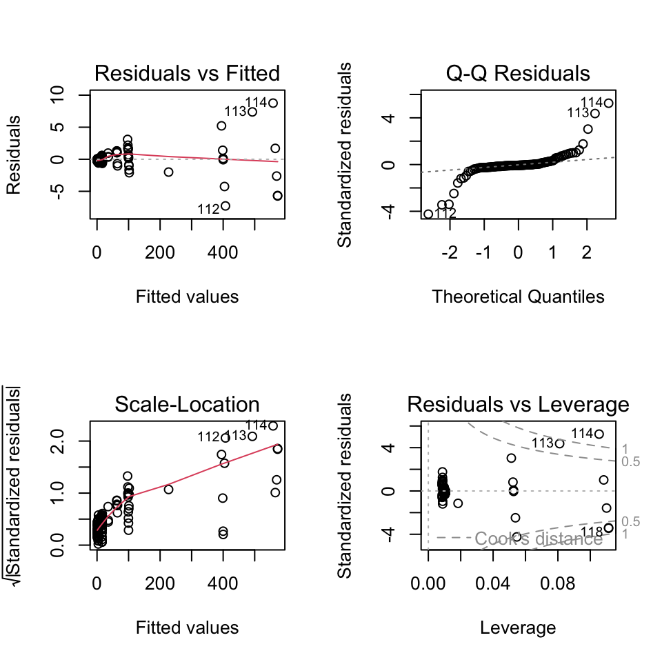
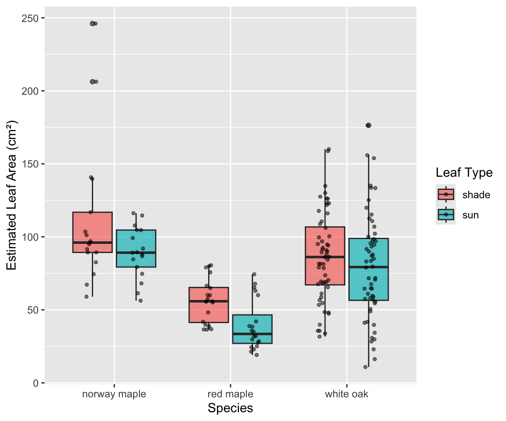
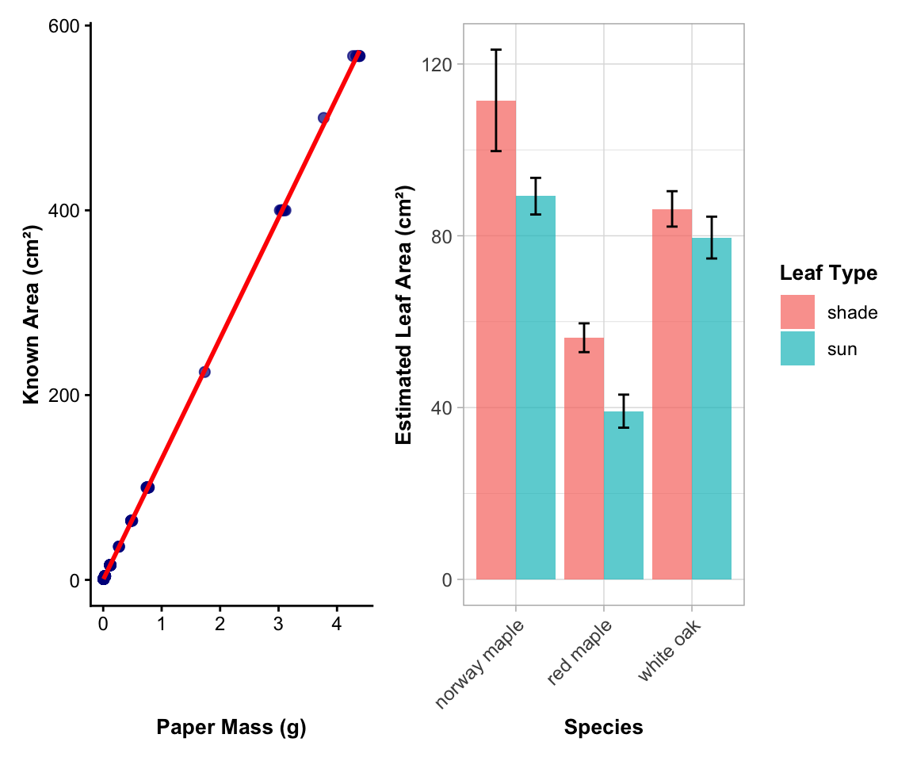

Linear Regression Analysis - Paperweight Calibration for Leaf Area Estimation
Author
Bill Perry
Introduction to Linear Regression Analysis
Background and Theory
Linear regression is used to model the relationship between a continuous response variable (Y) and a predictor variable (X). In this analysis, we will examine the relationship between the mass of paper cutouts and their corresponding known areas to develop a calibration model. This model will then be used to estimate leaf areas from the mass of leaf tracings cut from the same paper.
NoteThe Paperweight Method for Leaf Area Estimation
This technique uses the linear relationship between paper mass and area to estimate leaf area:
Calibration phase: Cut known areas of paper and weigh them to establish the mass-area relationship
Application phase: Trace leaves on the same paper, cut out the tracings, weigh them, and use the calibration equation to estimate leaf area
This method is cost-effective and doesn’t require expensive leaf area measurement equipment.
Linear regression makes the following assumptions about the relationship:
\[Y = \alpha + \beta X + \varepsilon\]
Where:
\(Y\) is the response variable (area in cm²)
\(X\) is the predictor variable (mass in g)
\(\alpha\) (alpha) is the intercept (theoretical area when mass = 0)
\(\beta\) (beta) is the slope (change in area per unit change in mass)
\(\varepsilon\) (epsilon) is the error term (random deviation from the line)
The sample regression equation is:
\[\hat{Y} = a + bX\]
Where:
\(\hat{Y}\) is the predicted area
\(a\) is the estimate of α (intercept)
\(b\) is the estimate of β (slope)
Method of Least Squares
The regression line is fitted using the method of least squares, which minimizes the sum of squared vertical distances (residuals) between observed and predicted Y values:
── Conflicts ────────────────────────────────────────── tidyverse_conflicts() ──
✖ dplyr::filter() masks stats::filter()
✖ dplyr::lag() masks stats::lag()
✖ dplyr::recode() masks car::recode()
✖ purrr::some() masks car::some()
ℹ Use the conflicted package (<http://conflicted.r-lib.org/>) to force all conflicts to become errors
library(readxl) # For reading Excel files# Load the calibration data (paperweights)paperweight_df <-read_excel("data/paperweights.xlsx")# Load the leaf trace data for future applicationleaf_trace_df <-read_excel("data/leaf_trace_masses.xlsx")# Preview the calibration datahead(paperweight_df)
# A tibble: 6 × 6
species section leaf_number leaf_type trace_mass_g `tree number`
<chr> <dbl> <dbl> <chr> <dbl> <dbl>
1 white oak 2 1 sun 0.261 NA
2 white oak 2 2 shade 0.940 NA
3 white oak 2 3 sun 0.730 NA
4 white oak 2 4 shade 0.975 NA
5 white oak 2 5 sun 0.373 NA
6 white oak 2 6 shade 0.529 NA
Data Overview
ImportantUnderstanding the Calibration Data
The paperweight data contains:
Known areas (cm²) of paper cutouts
these are standardized areas (1, 4, 9, 16, 25 cm²)
Measured masses (g) of those same cutouts
This establishes the mass-to-area conversion factor for this specific paper type
Multiple measurements at each area level provide replication for better model accuracy
Data Visualization
Exploratory Scatterplot
Let’s create a scatterplot to visualize the relationship between paper mass and known area:
Now, let’s add a regression line to visualize the linear relationship:
# Create scatterplot with regression linepaperweight_df %>%ggplot(aes(x = mass_g, y = area_cm2)) +geom_point(alpha =0.7, size =3, color ="darkblue") +geom_smooth(method ="lm", se =TRUE, color ="red", fill ="pink", alpha =0.3) +labs(x ="Mass (g)",y ="Area (cm²)" )

TipWhat to Look For
In the scatterplot, we want to see:
A strong linear relationship (points close to the line)
No obvious outliers or unusual patterns
The relationship should pass near the origin (0,0) since no mass should equal no area
Linear Regression Analysis
Fitting the Regression Model
# Fit the linear regression modelcalibration_model <-lm(area_cm2 ~ mass_g, data = paperweight_df)# Display the model summarysummary(calibration_model)
Call:
lm(formula = area_cm2 ~ mass_g, data = paperweight_df)
Residuals:
Min 1Q Median 3Q Max
-7.2774 -0.3059 -0.1221 0.2264 8.7592
Coefficients:
Estimate Std. Error t value Pr(>|t|)
(Intercept) 0.2792 0.1812 1.541 0.126
mass_g 130.5234 0.1473 885.964 <2e-16 ***
---
Signif. codes: 0 '***' 0.001 '**' 0.01 '*' 0.05 '.' 0.1 ' ' 1
Residual standard error: 1.764 on 116 degrees of freedom
Multiple R-squared: 0.9999, Adjusted R-squared: 0.9999
F-statistic: 7.849e+05 on 1 and 116 DF, p-value: < 2.2e-16
Line-by-Line Interpretation of Regression Output
Let’s break down the regression output:
Call: Shows the model formula used: area_cm2 ~ mass_g
Residuals: Summary statistics of the residuals (differences between observed and predicted values)
Coefficients:
(Intercept): The y-intercept (a) - theoretical area when mass = 0 (should be close to 0)
mass_g: The slope (b) - change in area per 1g increase in mass (cm²/g conversion factor)
Std. Error: Standard error of each coefficient estimate
t value: t-statistic for testing if coefficient ≠ 0
Pr(>|t|): p-value for the t-test of each coefficient
Residual standard error: Estimate of the standard deviation of residuals
Multiple R-squared: Proportion of variance in area explained by mass (should be very high, >0.95)
Adjusted R-squared: R² adjusted for the number of predictors
F-statistic: Test of overall model significance
p-value: Probability that the observed relationship occurred by chance
ImportantExpected Results for Good Calibration
For a good calibration model, we expect:
R² > 0.98: Very strong relationship
Intercept ≈ 0: No area when no mass
Slope: The paper density factor (area per unit mass)
Small residual standard error: Precise measurements
ANOVA Table for Regression
# Get ANOVA table for the regressionanova(calibration_model)
Analysis of Variance Table
Response: area_cm2
Df Sum Sq Mean Sq F value Pr(>F)
mass_g 1 2441415 2441415 784933 < 2.2e-16 ***
Residuals 116 361 3
---
Signif. codes: 0 '***' 0.001 '**' 0.01 '*' 0.05 '.' 0.1 ' ' 1
The ANOVA table partitions the total variation in area into:
- Regression: Variation explained by the model (should be most of the variation)
- Residuals: Unexplained variation (should be very small for calibration data)
Testing Regression Assumptions
Before accepting our regression results, we need to verify that our data meets the underlying assumptions of linear regression.
Assumptions of Linear Regression
Linearity: The relationship between X and Y is linear
Independence: Observations are independent of each other
Homoscedasticity: Constant variance of residuals across all values of X
Normality: Residuals are normally distributed
Let’s test each of these assumptions:
1. Independence Assumption
Independence is a design issue related to how the data was collected. We assume our sampling design ensures independence between observations.
2. Linearity and Homoscedasticity
We’ll check these assumptions using residual plots:
# Check linearity and homoscedasticity with residual plotspar(mfrow =c(2, 2))plot(calibration_model)

par(mfrow =c(1, 1))
ImportantInterpretation of Diagnostic Plots
Residuals vs Fitted: Should show random scatter around horizontal line at 0
Patterns indicate non-linearity
Funnel shapes indicate heteroscedasticity
Normal Q-Q: Points should follow the diagonal line
Deviations indicate non-normal residuals
Scale-Location: Should show random scatter with horizontal trend line
Increasing spread indicates heteroscedasticity
Residuals vs Leverage: Identifies influential observations
Points outside Cook’s distance lines are influential
3. Formal Tests of Assumptions
Test for Normality of Residuals
# Shapiro-Wilk test for normality of residualsshapiro.test(residuals(calibration_model))
Shapiro-Wilk normality test
data: residuals(calibration_model)
W = 0.67735, p-value = 9.425e-15
Test for Homoscedasticity
# Breusch-Pagan test for homoscedasticitybptest(calibration_model)
studentized Breusch-Pagan test
data: calibration_model
BP = 60.095, df = 1, p-value = 9.041e-15
Interpretation of Assumption Tests
Based on the diagnostic plots and formal tests:
Linearity: The residuals vs fitted plot should show random scatter around zero. For calibration data with known areas, this should be excellent.
Homoscedasticity:
The Scale-Location plot should show relatively constant spread
The Breusch-Pagan test evaluates constant variance (p > 0.05 suggests homoscedasticity)
NoteBreusch-Pagan Test Interpretation
What the test does:
Tests the null hypothesis: H₀ = “residuals have constant variance” (homoscedasticity)
Tests the alternative hypothesis: H₁ = “residuals have non-constant variance” (heteroscedasticity) Interpretation:
p-value < 0.05: We reject the null hypothesis
Conclusion: There is evidence of heteroscedasticity (non-constant variance)
Variance of residuals changes systematically across the range of fitted values
Normality:
The Q-Q plot should show points following the diagonal line
The Shapiro-Wilk test formally tests normality (p > 0.05 suggests normality)
For calibration data, normality should be good
Independence: Cannot be tested statistically; depends on study design
WarningIf Assumptions Are Violated
If assumptions are violated, consider:
Data transformation (though this should be rare for calibration data)
Checking for data entry errors
Examining outliers for measurement errors
Weighted least squares for heteroscedasticity
Results and Model Interpretation
Model Equation
Based on our regression analysis, the calibration equation is:
# Extract coefficientscoef(calibration_model)
(Intercept) mass_g
0.2792083 130.5234301
Area (cm²) = Intercept + Slope × Mass (g)
# Create the equation stringintercept <-coef(calibration_model)[1]slope <-coef(calibration_model)[2]paste("Area (cm²) =", round(intercept, 4), "+", round(slope, 2), "× Mass (g)")
[1] "Area (cm²) = 0.2792 + 130.52 × Mass (g)"
ImportantUnderstanding the Slope
The slope represents the specific leaf area of the paper - how many cm² of area per gram of paper. This is the conversion factor we’ll use to estimate leaf areas from trace masses.
Application: Estimating Leaf Areas
Now we’ll use our calibration model to estimate leaf areas from the trace masses:
Applying the Calibration Model
# Clean up the leaf_type variable (remove extra spaces)leaf_trace_df <- leaf_trace_df %>%mutate(leaf_type =str_trim(tolower(leaf_type)))# Apply the calibration model to estimate leaf areasleaf_trace_df <- leaf_trace_df %>%mutate(estimated_leaf_area_cm2 =predict(calibration_model, newdata =data.frame(mass_g = trace_mass_g)) )# View the resultshead(leaf_trace_df)
# A tibble: 6 × 7
species section leaf_number leaf_type trace_mass_g `tree number`
<chr> <dbl> <dbl> <chr> <dbl> <dbl>
1 white oak 2 1 sun 0.261 NA
2 white oak 2 2 shade 0.940 NA
3 white oak 2 3 sun 0.730 NA
4 white oak 2 4 shade 0.975 NA
5 white oak 2 5 sun 0.373 NA
6 white oak 2 6 shade 0.529 NA
# ℹ 1 more variable: estimated_leaf_area_cm2 <dbl>
# A tibble: 6 × 7
species leaf_type n mean_area sd_area min_area max_area
<chr> <chr> <int> <dbl> <dbl> <dbl> <dbl>
1 norway maple shade 17 112. 48.7 59.0 246.
2 norway maple sun 17 89.2 17.6 56.3 116.
3 red maple shade 20 56.3 15.0 36.4 80.5
4 red maple sun 20 39.2 17.2 19.1 74.4
5 white oak shade 56 86.3 30.9 31.7 160.
6 white oak sun 56 79.6 36.4 10.9 176.
ImportantBiological Interpretation
We can now compare:
Sun vs. shade leaves within species (sun leaves typically larger and thicker)
Different species (species-specific leaf size patterns)
Individual variation within treatment groups
Visualization of Estimated Leaf Areas
# Create boxplot of estimated leaf areas by species and leaf typeleaf_trace_df %>%ggplot(aes(x = species, y = estimated_leaf_area_cm2, fill = leaf_type)) +geom_boxplot(alpha =0.7) +geom_point(position =position_jitterdodge(dodge.width =0.8, jitter.width =0.2),alpha =0.5, size =1) +labs(x ="Species",y ="Estimated Leaf Area (cm²)",fill ="Leaf Type" )

Methods Section (for Publication)
Leaf Area Estimation: Leaf areas were estimated using the paperweight method. A calibration curve was established by measuring the mass of paper cutouts with known areas (1, 4, 9, 16, and 25 cm²) cut from the same paper used for leaf tracings. Linear regression was used to model the relationship between paper mass (g) and area (cm²). Prior to analysis, we examined the data for outliers and tested the assumptions of linearity, independence, homoscedasticity, and normality of residuals using diagnostic plots and formal statistical tests (Shapiro-Wilk test for normality, Breusch-Pagan test for homoscedasticity). Leaf areas were then estimated by applying the calibration equation to the masses of leaf tracings. All analyses were conducted in R (version X.X.X).
Results Section (for Publication)
The calibration model showed an excellent linear relationship between paper mass and known area (R² = [value], F(1,[df]) = [F-value], p < 0.001). The calibration equation was: Area (cm²) = [intercept] + [slope] × Mass (g). The model explained [R² × 100]% of the variation in area, indicating that paper mass is an excellent predictor of area for this paper type. Estimated leaf areas ranged from [min] to [max] cm², with significant differences observed between species and leaf types.
Publication Quality Figure
# Create publication-quality figure showing both calibration and application# Calibration plotcalib_plot <- paperweight_df %>%ggplot(aes(x = mass_g, y = area_cm2)) +geom_point(alpha =0.7, size =2, color ="darkblue") +geom_smooth(method ="lm", se =TRUE, color ="red", fill ="lightgray", alpha =0.3, linewidth =1) +labs(x ="Paper Mass (g)",y ="Known Area (cm²)") +theme_classic() +theme(axis.title =element_text(size =10, face ="bold"),axis.text =element_text(size =9),plot.title =element_text(size =11, face ="bold") )# Application plotapp_plot <- leaf_trace_df %>%ggplot(aes(x = species, y = estimated_leaf_area_cm2, fill = leaf_type)) +stat_summary(fun = mean, geom ="bar", position ="dodge", alpha =0.7) +stat_summary(fun.data = mean_se, geom ="errorbar", position =position_dodge(width =0.9), width =0.25) +labs(x ="Species",y ="Estimated Leaf Area (cm²)",fill ="Leaf Type", ) +theme_light()+theme(axis.title =element_text(size =10, face ="bold"),axis.text =element_text(size =9),axis.text.x =element_text(angle =45, hjust =1),plot.title =element_text(size =11, face ="bold"),legend.title =element_text(size =10, face ="bold") ) # Combine plotscombined_plot <- calib_plot + app_plot +plot_layout(ncol=2)combined_plot

Addendum: Extracting Residuals and Model Components for Future Analysis
Handling Missing Values and Creating Analysis-Ready Datasets
After completing a regression analysis, you may want to extract residuals, fitted values, and other model components for further analysis. This is particularly important when your original dataset contains missing values, as the regression model will only use complete cases.
Understanding the Data Used in the Model
# Check for missing values in the original datasetsum(is.na(paperweight_df$mass_g))
[1] 0
sum(is.na(paperweight_df$area_cm2))
[1] 0
# See how many observations were actually used in the modelnobs(calibration_model)
[1] 118
nrow(paperweight_df)
[1] 118
TipWhy Extract Residuals?
Residual analysis helps identify:
Outliers in the calibration data
Patterns that suggest model violations
Influential points that disproportionately affect the model
Quality control issues in data collection
Method 1: Merge with Original Data (Handling Missing Values)
# Simplest approach - let R handle the row matchingaugmented_data <- paperweight_dfaugmented_data[names(fitted(calibration_model)), c("fitted_values", "residuals", "std_residuals", "student_residuals", "leverage", "cooks_d")] <-data.frame(fitted_values =fitted(calibration_model),residuals =residuals(calibration_model), std_residuals =rstandard(calibration_model),student_residuals =rstudent(calibration_model),leverage =hatvalues(calibration_model),cooks_d =cooks.distance(calibration_model) )# View the structurehead(augmented_data)